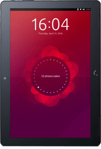

The Ubuntu Tablet – Why I’m Grabbing One
If you’ve been following Canonical/Ubuntu at all, you’re probably aware of the announcement of their first Ubuntu Tablet, the Aquaris M10 Ubuntu Edition. It is being produced by the manufacturer that made one of Canonical’s first Ubuntu phones, BQ, headquartered out of Spain. Currently there are two versions to choose from: The FHD (Full HD) and regular HD versions.
Their specs are fairly standard:
- 10.1” touch display with 10 simultaneous detections points
- FHD or HD resolutions (1920 X 1200 or 1280 X 800)*
- 7280 mAh LiPo battery
- 16 GB internal memory
- Memory Expansion up to 64 GB via microSD
- MediaTek Quad Core MT8163A up to (1.3 GHz or 1.5 GHz)* CPU
- MediaTek Mali-T720 MP2 up to (520 MHz or 600 MHz)* GPU
- 2 GB RAM
- Micro HDMI and Mirco-USB
- 8 MP or 5 MP* or Rear Camera
- 5 MP or 2 MP* Front Camera
- Bluetooth 4.0
*Depending on model.
Not a bad piece of kit, really, either way you go. But on to the reasons why I’m grabbing one whenever I can scrape together the scratch to actually buy it. Let’s face it, the digital landscape is pretty monochrome these days. And while Android has added some color, it’s still a desert painted in three hues: iStuff, Windows, and the aforementioned Android. The market is saturated and boring. Now, some may argue that Android is already GNU/Linux, so that base is covered. Whether that’s true or not (I take issue with it in spirit if not in fact), adding some extra vibrancy to the palette out there isn’t a bad thing—not in the least. If you’re a distro-hopper, then you know what I mean.
Add to that the actual nuts and bolts of some of the competition’s hardware and you have the immediate need for some fresh blood. Let’s take the Surface for example. Wow, what a colossal train wreck that thing is. I got one of these as a Christmas gift (god bless my family, but knowledge of technology is not one of their strong suits). In the spirit of a die-hard technophile, I put aside my differences as long as I could and dove into the thing with the enthusiasm of a lifelong kid that just loves to play with his toys. After some initial wonder, my experience became less than satisfactory. It went from bad to worse to infuriating. The Surface is really nice from the outside, but once I dove into its guts, I became wholly disappointed with the machine. I won’t go into a Microsoft bashing rant here, but suffice to say I wouldn’t buy another tablet made by them on pain of death or dismemberment.
The Ubuntu tablet looks like a refreshing change of pace from the above. It’s open source (yes Canonical has its proprietary stuff going on, but for the most part…) and therefore eons beyond the locked-down world of Microsoft’s making. For example, once I set up the Surface replete with password and user account I had to log in my “Microsoft” account to access some functionality (using my Hotmail login). I cocked an eyebrow, but thought: what the heck? It’s probably just linking to my hotmail account as an option. Nope. The tablet immediately took my initial setup, username and all, threw it out, and used my hotmail account login as my default tablet’s login, irrevocably marrying the two in what looks to me very, very suspicious switchery. Also, a Buy Office 365 Now! Pop-up pops up in your notifications with the appropriately annoying sound daily until you rip it out by uninstalling the “program.” Thank you, but I like my hardware out of the box without commercials. I’m fairly certain Ubuntu will be less draconian in its marketing practices.
Now, let’s talk the “C” word for a second. Convergence. Much has been bandied about concerning this next frontier of portable computing. Thus far, companies have claimed, in a marketing attempt to secure the prize of “first in,” to have converged their devices. To my knowledge, no one really has. Kind of like cold fusion, it’s been a bunch of tall tales designed to add credibility and dominance (and marketing buzz) to tech companies rather than actual technological advancement. All such claims have eventually crumbled under scrutiny and usually the stories slink back to the dark recesses of PR from whence they were born. But it seems that a champion has finally emerged and Canonical is quietly claiming the prize with this tablet. The threshold of convergence lies in the ability of a device to act as a full-fledged PC (changing the onboard UI to one of a robust, standard desktop environment used by the OS) once outfitted with the proper hardware: mouse, keyboard, display. To my knowledge, the Ubuntu tablet does just that. Once the mouse, keyboard and, optionally, a larger screen are connected (the keyboard and mouse have to be connected via Bluetooth here, but more on that later), the Ubuntu Touch interface found on the tablet (and phone), turns from “scopes” interface into the familiar Unity desktop. If the hardware can handle the the actual demands of a full Unity desktop, then convergence here we come!
I do have my reservations about converging a tablet, however. I don’t know if it is enough to get your average user off of the mainstream sauce, as it doesn’t immediately scream something new and useful that buyers will be tearing down storefronts to get at. But upon further examination, it looks pretty handy. Picture a job that requires on-site computing away from an office. You bring the tablet down, do whatever work is necessary—making notes, writing reports, taking pictures etc. You can then head back to the office and without having to rely on the tired old way of uploading those docs, you slam the tablet into a dock that’s connected to a bigger display and hammer away at the data with typical mouse and keyboard. Suddenly, the picture starts to look a lot more compelling. We’re not talking phones here, but this kind of behavior with an Ubuntu phone makes this even more interesting. I can’t think of all use cases here, but I’m hard pressed to argue that convergence would be a bad thing. Also, the ability of the device to be able to run full applications that are used with the regular flavor of the OS makes this even more compelling of an idea. Running the full version of LibreOffice, for instance, on the tablet would be extremely useful, if the tablet’s hardware is capable of such. I’ve heard that LibreOffice can run comfortably on a Raspberry Pi 3, so I’m not that worried. Expand this to the whole of software that linux has to offer and you have a winner on your hands. Other hardware, thus far, relies on either a wholly walled off “app store” or specific versions of software made for that device. Not exactly all that appealing. The only argument against this being less than useful would be the proliferation of web-apps like the aforementioned Office 356. But web apps haven’t exactly caught digital fire like some predicted they would, and we may never see the domination of such considering the limitations of browsers and internet connections as they stand today *cough* telecoms! *cough*.
Now, back to my Bluetooth reservations. I find it a rather odd choice on the part of BQ to go this direction for mouse keyboard connectivity. While it may prove to be the option of the future, it’s not exactly friendly to the now of peripherals; how many people do you know that just have Bluetooth keyboards and mice lying around? That being said, I did some research on prices for said peripherals and they’re not all that expensive. Couple that with the idea that you can just “pair” them with the tablet without the fuss of dongles and cords and this might just be a stroke of genius. Even if this spells a kind of pain the ass now, I’d be surprised if we don’t see this sort of thing taking off with more and more hardware going forward.
Let’s face it, supporting GNU/Linux is good for the greater ecosystem. People may disagree to a fault about Canonical’s motives, but anything Linux is better than the monopoly that is Microsoft, the outrageously overpriced hardware and walled in prison that is Apple, and the ever-increasingly-creepy nature that is Google. In light of the benefits of an Ubuntu tablet, along with the “curious” factor figured in, the scales definitely tip in the direction of “buy.” If only my checking account would tip in the same direction, I’d be able to scoop one up upon launch. I do promise, however, that once I get one in due time, I’ll tinker with the thing and drop a review here so you can all see how the experiment went.
If you’re looking for a tablet you can visit the BQ site here:
The FHD version and the HD are going for €299 and €259 respectively (about $340 and $295 US).
Currently, there is a launch special going on where you can get a cover and screen protector with your pre-order for free.
Deliveries are to begin the second half of April.
Update:
BQ has apparently pushed back the date of release. Their target puts the release in mid or late May.Apparently the infowebs had their streams crossed (don’t cross the streams!). The BQ Reader is currently shipping for pre-orders. Not in May as erroneously guesstimated by yours truly.
The Linux Crowd
About this column: The Linux Crowd attempts to locate interesting crowdfunded projects and bring them to your attention, the GNU/Linux enthusiast. These projects are curated from the usual crowdfunding sites such as Kickstarter.com, Indiegogo.com, and Crowdsupply.org., in order to find those that look particularly noteworthy, but ones specifically that use GNU/Linux as a major component. Some of these projects are ongoing and could use your support, while others might have finished (successfully) in which case you can still contribute to purchase an item. If you have any comments or questions hit me up at: FreedomPenguinBrad@gmail.com